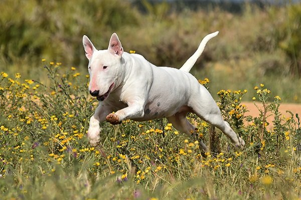
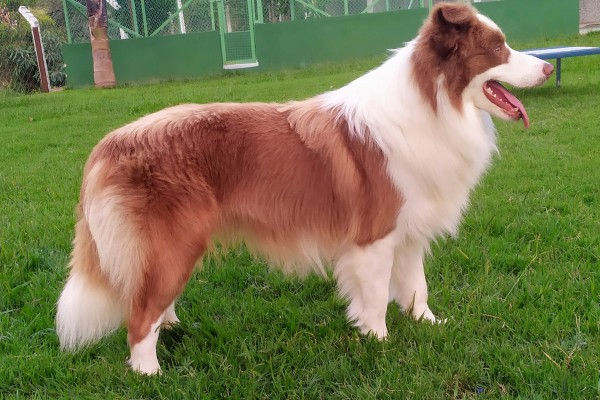

beagle,desaparecido de casa a 2 dias, por favor ajudem.Ela precisa de medicamentos continuos ela é cardiaca , desaparecido em Av.candido rosa 2277
Endereço para entregar ele : Av. osmar filho tel:99318854 CEP:22765-430
builterrier, desaparecido de casa a 5 dias , por favor ajudem. Ele é um cachorro cego e precisa de ajuda, desaparecido em Av.candido rosa 2277
Endereço para entregar ele : Av. osmar filho tel:99318854 CEP:22765-430
collie, desaparecido de casa a 5 dias , por favor ajudem. Ele é um cachorro cego e precisa de ajuda, desaparecido em Av.candido rosa 2277
Endereço para entregar ele : Av. osmar filho tel:99318854 CEP:22765-430